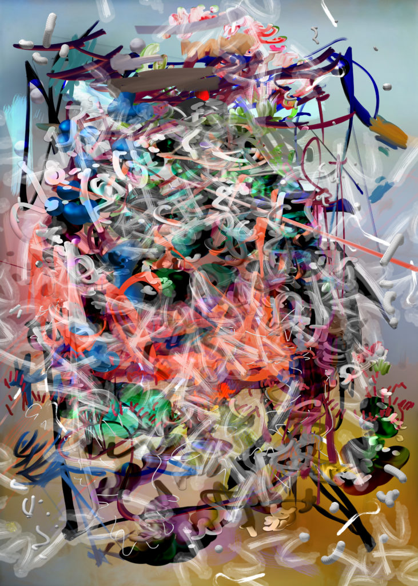

If patina is the sheen that develops on a material as it ages, how does patina manifest in digital artifacts? This is both a philosophical and a literal question. Many of the digital products and processes we encounter are imperceptible to the human eye, but not truly immaterial. It’s hard to build a mental model of them because they’re either obfuscated by a black box, located elsewhere on a server, or lost to the ever-widening knowledge gap between technology users and technology architects. Digital patina is an exhibition* staged at Gray Area Foundation for the Arts, in conjunction with collaborators from two now-defunct institutions: the Netherlands Media Art Institute and FUSE, the 1990’s experimental typography publication. Works in this collection relate to the grain of the digital world, as it permeates our physical one.
* imaginary
